ใบเรียนรู้ 4.3
สมดุลต่อการเลื่อนที่
จากสิ่งที่เห็น → แผนภาพแรง → สมการ → การคำนวณ
เติมเนื้อหาใต้หัวข้อและตอบคำถามสั้น ๆ ใช้รูปที่เตรียมให้ประกอบการอธิบาย ถ้าโจทย์ให้มวล ใช้ g = 9.8 m/s² เว้นแต่ระบุค่าอื่น โจทย์ที่ระบุ “ดัดแปลงจาก” เปลี่ยนข้อมูล/บริบทจากต้นฉบับ โดยคงทักษะเดิม ภาพใหม่ใช้ข้อมูลตามโจทย์ ไม่วัดระยะจากภาพ
1 มีแรงกระทำ แต่ความเร็วไม่เปลี่ยน

คำถาม 1
จอคอมพิวเตอร์อยู่นิ่ง แปลว่าไม่มีแรงกระทำเลยหรือไม่? ระบุแรงสองแรงในรูป A
คำถาม 2
ถ้าแรงลัพธ์แนวระดับของรถเป็นศูนย์ รถที่กำลังวิ่งจะหยุดทันทีหรือเคลื่อนที่อย่างไร?
สมดุลต่อการเลื่อนที่
\[\sum\vec F=0\quad\Rightarrow\quad\vec a=0,\quad\vec v=\text{คงตัว}\]
คำถาม 3
รถทดลองถูกยึดให้อยู่นิ่งตลอดช่วงสังเกต จงระบุเงื่อนไขของแรงลัพธ์และความเร็ว
คำถาม 4
ปล่อยก้อนหินให้ตกจากหยุดนิ่ง โดยไม่คิดแรงต้านอากาศ ระหว่างตกอยู่ในสมดุลต่อการเลื่อนที่หรือไม่?
2 เลือกวัตถุ แล้วระบุแรง
แรงที่ใช้บ่อย
\(N\): แรงปฏิกิริยาตั้งฉากกับผิวสัมผัส
\(T\): แรงตึงเชือก ดึงตามแนวเชือกออกจากวัตถุ
\(f\): แรงเสียดทาน ขนานผิว ต้านการเลื่อนหรือแนวโน้มการเลื่อนสัมพัทธ์ระหว่างผิว
คำถาม 5
เมื่อวิเคราะห์ก้อนวัตถุที่ผูกเชือก เราควรใส่แรงที่ก้อนวัตถุดึงเชือกลงในแผนภาพแรงของก้อนวัตถุหรือไม่?

คำถาม 6
รูป A แรงจากโต๊ะมีขนาดเท่าใด?
คำถาม 7
รูป B แรงจากโต๊ะมีขนาดเท่าใด? เขียนสมการแนวดิ่งหนึ่งสมการ
คำถาม 8
มีแรง 8 N ไปทางขวา และแรง 3 N ไปทางซ้าย ต้องเพิ่มแรงที่สามเท่าใดและทิศใดให้สมดุล?
สมดุลเมื่อมีสองแรง

คำถาม 9
บันไดแข็งพิงกำแพงเรียบและพื้นเรียบในรูป โดยปลายบนยังแตะกำแพงและไม่มีเชือกยึด จะอยู่นิ่งในท่าเอียงนี้ได้หรือไม่?
3 ทดลองแรงสามแรง และต่อยอดเป็นสี่แรง
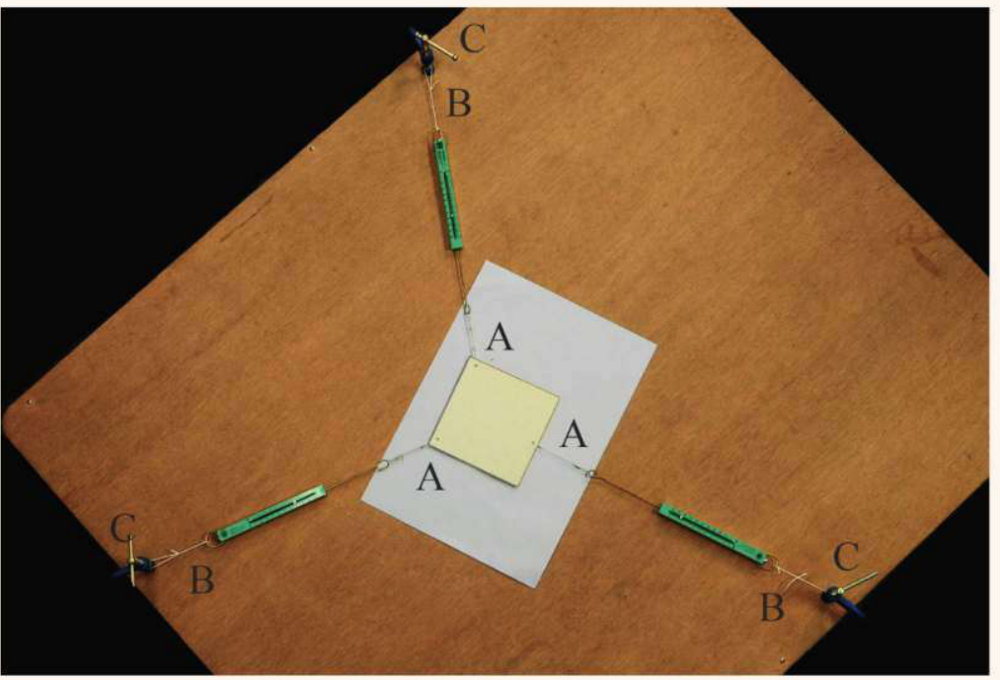
ดึงด้วยเครื่องชั่งสปริงสามอันให้แผ่นวัสดุอยู่นิ่ง บันทึกขนาดและแนวแรง จากนั้นแทนแรงด้วยลูกศรตามมาตราส่วน แล้วนำมาต่อหัวกับหาง

คำถาม 10
ขณะแผ่นวัสดุอยู่นิ่ง แรงลัพธ์ที่กระทำต่อแผ่นวัสดุเป็นเท่าใด?
คำถาม 11
เมื่อต่อแนวแรงทั้งสามในกรณีทดลองนี้ แนวแรงพบกันอย่างไร?
คำถาม 12
ถ้ารวมแรงสองแรงแรก แรงที่สามต้องมีขนาดและทิศอย่างไรเมื่อเทียบกับแรงลัพธ์นั้น?
คำถาม 13
ลูกศรสามแรงต่อหัวกับหางแล้วเป็นรูปปิดหรือไม่? แรงลัพธ์เป็นเท่าใด?
แรงสามแรงในสมดุล

คำถาม 14
สี่แรงในรูป B ต่อเป็นรูปใด? แรงทุกแรงจำเป็นต้องเท่ากันหรือไม่?
คำถาม 15
ถ้าจับคู่ \(\vec R_{12}=\vec F_1+\vec F_2\) และ \(\vec R_{34}=\vec F_3+\vec F_4\) ผลรวมสองกลุ่มต้องสัมพันธ์กันอย่างไร?
เงื่อนไขร่วมของสมดุลต่อการเลื่อนที่
\[\sum\vec F=0\]
4 แตกแรงให้ตรงกับมุม แล้วรวมทีละแกน

ด้านประชิดมุมกับด้านตรงข้ามมุม
มุมจากแกน \(x\): \(F_x=F\cos\theta,\ F_y=F\sin\theta\)
ใส่เครื่องหมายบวกหรือลบตามทิศขององค์ประกอบแต่ละแกน
คำถาม 16
รูป A จงหา \(F_x,F_y\)
คำถาม 17
รูป B จงหา \(F_x,F_y\)
สมดุลในสองมิติ
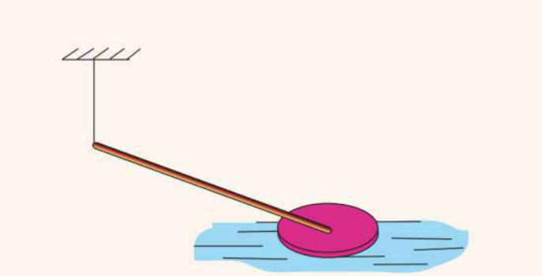
คำถาม 18
แท่งเสาอากาศวางปลายล่างบนแพที่เลื่อนแนวระดับได้อิสระ ปลายบนผูกเชือกเบากับเพดาน ไม่มีแรงน้ำแนวระดับหรือแรงภายนอกแนวระดับอื่น ถ้าระบบอยู่นิ่ง แนวเชือกต้องเป็นอย่างไร?
5 กฎไซน์และกฎโคไซน์กับสามเหลี่ยมแรง
ใช้เป็นอีกวิธีหนึ่งเมื่อแรงสามแรงต่อกันเป็นสามเหลี่ยมปิด เริ่มจากรูปเรขาคณิต แล้วเชื่อมกลับไปยังแรง

กฎไซน์
จึงได้ \(\dfrac a{\sin A}=\dfrac b{\sin B}\) และทำแบบเดียวกันกับอีกความสูง\[\boxed{\frac a{\sin A}=\frac b{\sin B}=\frac c{\sin C}}\]

กฎโคไซน์
จากภาพแรงเป็นสามเหลี่ยม 1

คำถาม 19
ด้าน u, v, w แทนขนาดแรงใดตามลำดับ?
คำถาม 20
มุมภายใน C ในสามเหลี่ยมมีค่าเท่าใด? เทียบกับมุม 120° ในรูปแรง
คำถาม 21
เลือกกฎที่ใช้หา \(F_3\) แล้วเขียนสมการและคำตอบ
\(F_3=10\sqrt7\approx26.5\ \mathrm{N}\)
จากภาพแรงเป็นสามเหลี่ยม 2

คำถาม 22
ระบุแรงสามแรงที่กระทำต่อจุดต่อ แล้วจับคู่ด้าน u, v, w
คำถาม 23
จงหามุมภายใน A, B และ C ของสามเหลี่ยมด้านขวา
คำถาม 24
เขียนกฎไซน์ให้ตรงคู่ด้าน–มุม แล้วหาแรงตึงเชือกสองเส้น
6 หาแรงที่ทำให้สมดุล
ดัดแปลงจาก แบบฝึกหัด 4.3 ข้อ 3

คำถาม 25
กำหนด +x ไปขวา +y ขึ้น แรง 30 N ชี้ซ้าย และแรง 40 N ชี้ขวาลงทำมุม 60° ใต้ +x จงหาองค์ประกอบของแรงลัพธ์สองแรง
คำถาม 26
จากสองแรงข้างบน จงหาองค์ประกอบ ขนาด และทิศของแรงที่สามที่ทำให้สมดุล ระบุมุมเหนือแนว +x
\(F_3=\sqrt{10^2+(20\sqrt3)^2}=10\sqrt{13}\approx36.06\ \mathrm{N}\)
\(\theta=\tan^{-1}(2\sqrt3)\approx73.9^\circ\) เหนือ +x
ดัดแปลงจาก ท้ายบท 4 ปัญหาข้อ 1

คำถาม 27
แรง 60 N ชี้ขวา และแรง 30 N ชี้ซ้ายขึ้นทำมุม 60° เหนือแนวซ้าย จงหาแรงที่สามทั้งองค์ประกอบ ขนาด และทิศ
\(F_3=30\sqrt3\approx51.96\ \mathrm{N}\) ชี้ซ้ายลง 30° ใต้แนวซ้าย
7 เชือกเอียงเส้นเดียวและการยกวัตถุ
ดัดแปลงจาก ตัวอย่าง 1 · เชือกเอียงกับแรงดึงแนวระดับ
ป้ายหนัก 12 N อยู่นิ่ง ถูกดึงแนวระดับไปขวา 5 N เชือกชี้ซ้ายขึ้นและทำมุม θ กับแนวดิ่ง เขียนสมการสองแกน

คำถาม 28
ป้ายหนัก 12 N อยู่นิ่ง ถูกดึงแนวระดับไปขวา 5 N เชือกชี้ซ้ายขึ้นและทำมุม θ กับแนวดิ่ง เขียนสมการสองแกน
คำถาม 29
จากป้ายหนัก 12 N กับแรงดึง 5 N จงหา T และ θ (มุมกับแนวดิ่ง)
\(\theta=\tan^{-1}(5/12)\approx22.62^\circ\)
คำถาม 30
ป้ายอีกอันหนัก 24 N ถูกดึงไปขวา 7 N แล้วอยู่นิ่งด้วยเชือกเอียงเส้นเดียว จงหา T และมุม θ กับแนวดิ่ง
ดัดแปลงจาก แบบฝึกหัด 4.3 ข้อ 4

คำถาม 31
จุดต่อเบาอยู่นิ่ง เชือกแนวระดับดึงซ้าย 24 N และเชือกเอียงดึงขวาขึ้น 60° เหนือแนวระดับ จงหาแรงตึงเชือกเอียง
คำถาม 32
จากจุดต่อ 24 N และเชือกเอียง 60° จงหาน้ำหนัก W ที่แขวนด้วยเชือกแนวดิ่ง
ดัดแปลงจาก แบบฝึกหัด 4.3 ข้อ 5

คำถาม 33
เชือกเบายาว 125 cm แขวนวัตถุหนัก 64 N ดึงแนวระดับจนสูงจากตำแหน่งต่ำสุด 25 cm แล้วอยู่นิ่ง จงหาระยะดิ่งจากจุดแขวนและระยะเยื้องแนวระดับ
คำถาม 34
จากเชือกยาว 125 cm และน้ำหนัก 64 N ที่ยกขึ้น 25 cm จงหาแรงดึงแนวระดับ F และแรงตึง T
\(T(100/125)=64\Rightarrow T=80\ \mathrm{N}\)
8 เชือกสองเส้นรับน้ำหนักร่วมกัน
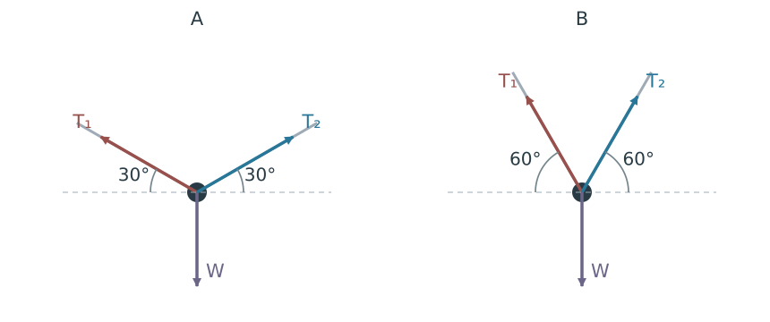
คำถาม 35
แรงตึงซ้ายและขวาเท่ากันเป็น \(T\) จงเขียนสมการแนวดิ่ง เมื่อแต่ละเชือกทำมุม \(\alpha\) กับแนวระดับ
คำถาม 36
ถ้า W = 60 N แต่ละเชือกใน A และ B มีแรงตึงเท่าใด? กรณีใดตึงกว่า?
ดัดแปลงจาก ตัวอย่าง 2 · สัญญาณไฟจราจร
ป้ายมวล 10 kg; AB = 6 m, BC = 8 m; ∠ABC = 90°; A,C อยู่ระดับเดียวกัน ใช้ g = 9.8 m/s² เชือกเบาและจุดต่อไม่มีมวล
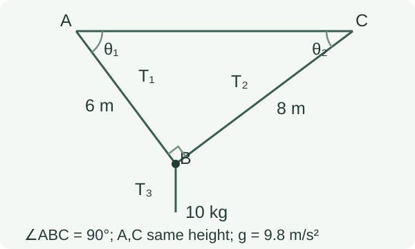
คำถาม 37
ป้ายมวล 10 kg อยู่นิ่งที่ใต้จุด B เชือกแนวดิ่งมีแรงตึง T₃ ใช้ g = 9.8 m/s² จงหา T₃
คำถาม 38
เชือก AB = 6 m, BC = 8 m, ∠ABC = 90° และ A,C อยู่ระดับเดียวกัน มุม θ₁ ที่ A (เชือก AB) และ θ₂ ที่ C (เชือก BC) วัดจากแนวระดับ จงหา AC และ sin,cos ของทั้งสองมุม
\(\sin\theta_2=3/5,\cos\theta_2=4/5\)
คำถาม 39
ป้าย 10 kg กับเชือก AB = 6 m, BC = 8 m ข้างบน เขียนสมการของจุดต่อ B โดย +x ขวา +y ขึ้น กำหนด T₁ ใน AB และ T₂ ใน BC
\((4/5)T_1+(3/5)T_2-98=0\)
คำถาม 40
แก้สมการจุดต่อป้าย 10 kg เพื่อหา T₁ ใน AB และ T₂ ใน BC
คำถาม 41
วัตถุหนัก 80 N แขวนอยู่นิ่งด้วยเชือกซ้ายทำมุม 30° และเชือกขวา 60° กับแนวระดับ จงหาแรงตึงสองเส้น
\(T_L=40\ \mathrm{N},\ T_R=40\sqrt3\approx69.3\ \mathrm{N}\)
ดัดแปลงจาก ท้ายบท 4 ปัญหาข้อ 2
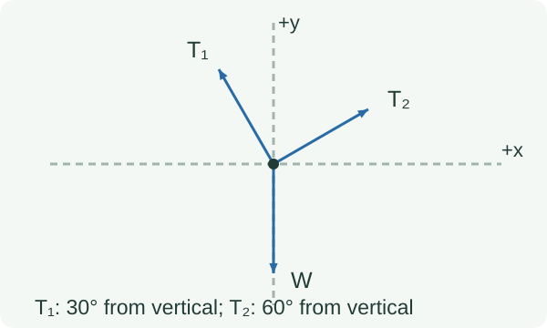
คำถาม 42
วัตถุหนัก W อยู่นิ่งที่จุดต่อ เชือกซ้าย T₁ ทำมุม 30° กับแนวดิ่ง เชือกขวา T₂ ทำมุม 60° กับแนวดิ่ง จงหาแรงตึงในรูป W
\(T_1=\sqrt3W/2,\ T_2=W/2\)
คำถาม 43
แขวนป้ายตรงกลางเชือกเบาที่ปลายสองข้างอยู่ระดับเดียวกัน ทำไมเชือกที่รับน้ำหนักจึงไม่เป็นเส้นตรงแนวระดับพอดี?
คำถาม 44
ป้ายสองอันหนักเท่ากัน ใช้เชือกชนิดเดียวกัน: ก (ภาพ A) แต่ละด้านทำมุม 30° กับแนวระดับ; ข (ภาพ B) ทำมุม 60° ถ้าเพิ่มน้ำหนักเท่ากัน กรณีใดถึงแรงตึงขาดก่อน?
9 แรงเสียดทานบนพื้นระดับ
แรงเสียดทานสถิตและจลน์
ใกล้เริ่มเลื่อน: \(f_s=f_{s,\max}=\mu_sN\)
กำลังเลื่อน: \(f_k=\mu_kN\) ต้านการเลื่อนสัมพัทธ์
หาค่า \(N\) จากสมการตั้งฉากกับผิวก่อน ไม่แทน \(N=mg\) ทุกกรณี
ดัดแปลงจาก แบบฝึกหัด 4.3 ข้อ 1
คำถาม 45
กล่องเลื่อนไปขวาบนพื้นระดับด้วยความเร็วคงตัว ถูกดึง 80 N ทำมุม 60° เหนือแนวระดับ จงหาแรงเสียดทานและทิศ
คำถาม 46
กล่องหนัก 100 N ถูกดึง 50 N ที่มุม 37° เหนือแนวระดับ และเลื่อนด้วยความเร็วคงตัว ให้ sin 37° = 0.6, cos 37° = 0.8 จงหา N
คำถาม 47
จากกรณีกล่องหนัก 100 N ข้างบน จงหาแรงเสียดทานและ μₖ
\(\mu_k=f_k/N=40/70=4/7\approx0.571\)
ดัดแปลงจาก ท้ายบท 4 ปัญหาข้อ 5
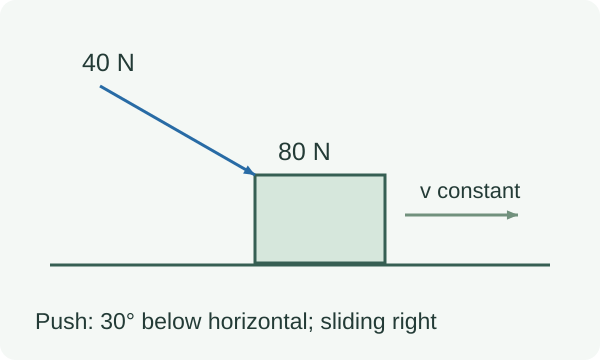
คำถาม 48
กล่องหนัก 80 N ถูกกดด้วยแรง 40 N ชี้ขวาลง 30° ใต้แนวระดับ เลื่อนไปขวาด้วยความเร็วคงตัว จงหาแรงที่กล่องกดพื้นในแนวตั้งฉาก
คำถาม 49
สำหรับกล่องหนัก 80 N ถูกกด 40 N ที่ 30° ใต้แนวระดับและเลื่อนด้วยความเร็วคงตัว จงหา μₖ
\(\mu_k=f_k/100=\sqrt3/5\approx0.3464\)
10 สมดุลบนพื้นเอียง
ดัดแปลงจาก ตัวอย่าง 3 · ก้อนวัตถุอยู่นิ่งบนพื้นเอียง
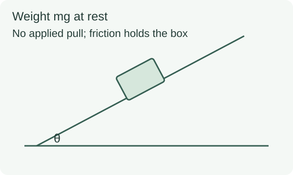
คำถาม 50
องค์ประกอบของน้ำหนักตามพื้นเอียงและตั้งฉากกับพื้นเอียงเป็นเท่าใด?
ตั้งฉากกดเข้าพื้น: \(mg\cos\theta\)
คำถาม 51
จงหาแรงเสียดทานสถิตและแรงปฏิกิริยาตั้งฉาก ในรูปของ m, g, θ
\(N-mg\cos\theta=0\Rightarrow N=mg\cos\theta\)
คำถาม 52
วัตถุอยู่นิ่งบนพื้นเอียง แปลว่าใช้ \(f_s=\mu_sN\) ได้เสมอหรือไม่?
ดัดแปลงจาก แบบฝึกหัด 4.3 ข้อ 2
คำถาม 53
กล่องหนัก 80 N อยู่นิ่งบนพื้นเอียง 30° ไม่มีแรงดึงอื่น จงหา N และแรงเสียดทานสถิตพร้อมทิศ
\(f_s=80\sin30^\circ=40\ \mathrm{N}\) ขึ้นตามพื้นเอียง
คำถาม 54
วัตถุหนัก 100 N เริ่มวางนิ่งบนพื้นเอียง 30° ที่มี μₛ = 0.70 จงตรวจว่าอยู่นิ่งได้หรือไม่ และแรงเสียดทานจริงเท่าใด
ต้องใช้ \(f_s=100\sin30^\circ=50\ \mathrm{N}\)
\(f_{s,\max}=0.70(86.6)\approx60.6\ \mathrm{N}>50\ \mathrm{N}\) จึงอยู่นิ่งได้ และแรงจริงคือ 50 N ขึ้นตามพื้นเอียง
ดัดแปลงจาก ท้ายบท 4 ปัญหาข้อ 3
คำถาม 55
พื้นเอียงยาวตามผิว 1.00 m สูง 0.60 m วัตถุไถลลงด้วยความเร็วคงตัว ไม่มีแรงดึงอื่น จงหา μₖ
ดัดแปลงจาก ท้ายบท 4 ปัญหาข้อ 4
กล่องหนัก 40 N บนพื้นเอียง 37° มี μₖ = 0.25 ให้ sin 37° = 0.6, cos 37° = 0.8 แรง F ขนานพื้นและชี้ขึ้นทั้งสองกรณี ก เคลื่อนขึ้น ข เคลื่อนลง แรงเสียดทานชี้ทางใด?
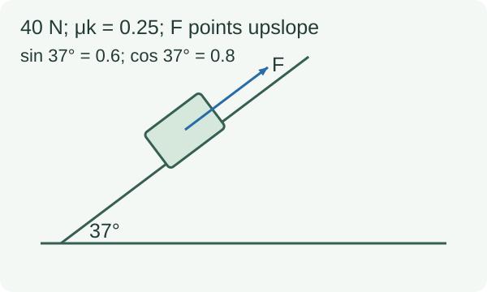
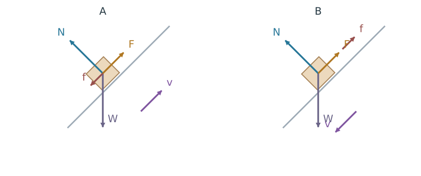
คำถาม 56
กล่องหนัก 40 N บนพื้นเอียง 37° มี μₖ = 0.25 ให้ sin 37° = 0.6, cos 37° = 0.8 แรง F ขนานพื้นและชี้ขึ้นทั้งสองกรณี ก เคลื่อนขึ้น ข เคลื่อนลง แรงเสียดทานชี้ทางใด?
คำถาม 57
กรณี ก กล่องหนัก 40 N เคลื่อนขึ้นพื้นเอียง 37° ด้วยความเร็วคงตัว มี μₖ = 0.25 จงหา F ที่ชี้ขึ้นตามพื้น ใช้ sin = 0.6, cos = 0.8
\(F=40(0.6)+8=32\ \mathrm{N}\)
คำถาม 58
กรณี ข กล่องเดิมเลื่อนลงด้วยความเร็วคงตัว แต่ F ยังชี้ขึ้นตามพื้นเอียง จงหา F
ดัดแปลงจาก ท้ายบท 4 ปัญหาท้าทายข้อ 21
คำถาม 59
ค่อย ๆ เพิ่มมุมพื้นเอียงจาก 20° จนวัตถุเพิ่งเริ่มจะไถลลงที่ 45° ไม่มีแรงดึงอื่น แรงเสียดทานสถิตช่วงก่อนเริ่มเลื่อนเปลี่ยนอย่างไร และมีค่าเท่าใดที่ขอบเขต?
11 แยกวัตถุ และหาค่าที่รับได้มากที่สุด
ระบบเชือกและรอก
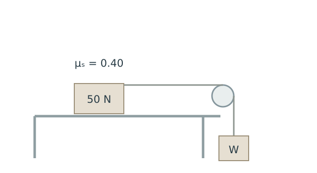
คำถาม 60
จงหาน้ำหนัก W มากที่สุดที่ยังทำให้ระบบอยู่นิ่ง
ที่ขีดจำกัด \(T=20\ \mathrm{N}\); วัตถุแขวนมี \(W=T\)
จึงได้ \(W_{\max}=20\ \mathrm{N}\)
ดัดแปลงจาก ท้ายบท 4 ปัญหาข้อ 6
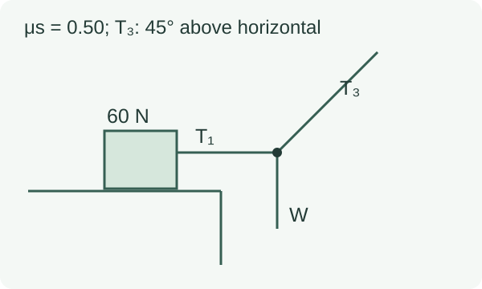
คำถาม 61
กล่องหนัก 60 N อยู่บนโต๊ะระดับ มี μₛ = 0.50 เชือก T₁ ดึงแนวระดับเข้าหาจุดต่อ จงหา T₁ มากที่สุดที่ยังอยู่นิ่ง
คำถาม 62
ที่จุดต่อเดิม T₁ ชี้ซ้าย T₂ = W ชี้ลง T₃ ชี้ขวาขึ้น 45° กับแนวระดับ จงหา W มากที่สุดและ T₃ เมื่อกล่อง 60 N ใกล้เริ่มเลื่อน
\(W_{\max}=30\ \mathrm{N}\), \(T_3=30\sqrt2\approx42.43\ \mathrm{N}\)
ดัดแปลงจาก ท้ายบท 4 ปัญหาข้อ 7
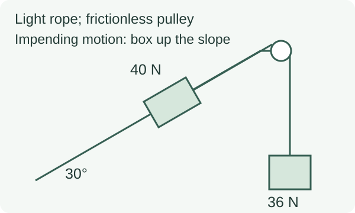
คำถาม 63
น้ำหนักแขวน 36 N ต่อเชือกเบาผ่านรอกลื่นกับกล่องหนัก 40 N บนพื้นเอียง 30° ขณะกล่องใกล้เริ่มเคลื่อนขึ้น จงระบุทิศแรงเสียดทานและ T
คำถาม 64
สำหรับระบบ 36 N กับกล่อง 40 N ที่ใกล้เริ่มเคลื่อนขึ้นพื้น 30° จงหา μₛ
\(\mu_s=16/(20\sqrt3)\approx0.4619\)
ดัดแปลงจาก ท้ายบท 4 ปัญหาท้าทายข้อ 26
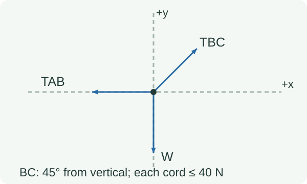
คำถาม 65
จุด B ผูกเชือก AB แนวระดับไปซ้าย เชือก BC ทำมุม 45° กับแนวดิ่งไปขวาขึ้น และแขวน W แนวดิ่ง เชือกแต่ละเส้นทนแรงตึง 40 N จงเขียนแรงตึงในรูป W และระบุเส้นที่ถึงขีดจำกัดก่อน
\(T_{AB}=T_{BC}\sin45^\circ=W\); เชือกแนวดิ่งตึง W ดังนั้น BC ถึงขีดจำกัดก่อน
คำถาม 66
จากระบบ AB–BC ข้างบนที่เชือกทุกเส้นทน 40 N จงหา W มากที่สุด และตรวจอีกสองเส้น
\(T_{AB}=T_{\mathrm{vertical}}=20\sqrt2<40\ \mathrm{N}\)
ดัดแปลงจาก ท้ายบท 4 ปัญหาท้าทายข้อ 25 · สายซุงว่าว
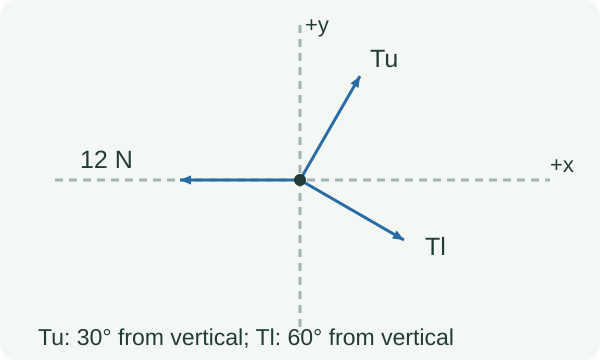
คำถาม 67
จุดต่อสายว่าวอยู่นิ่ง ถูกดึงแนวระดับไปซ้าย 12 N สายบนดึงขวาขึ้นทำมุม 30° กับแนวดิ่ง สายล่างดึงขวาลง 60° กับแนวดิ่ง จงหาแรงตึงบนและล่าง
\(T_u\cos30^\circ=T_l\cos60^\circ\Rightarrow T_l=\sqrt3T_u\)
\(T_u=6\ \mathrm{N},\ T_l=6\sqrt3\approx10.39\ \mathrm{N}\)
ลำดับการแก้โจทย์สมดุลต่อการเลื่อนที่
อ้างอิงเนื้อหา: สสวท. ฟิสิกส์ เล่ม 2 บทที่ 4 หัวข้อ 4.3 และโจทย์ท้ายบทที่เกี่ยวข้อง ภาพผลทดลองแบบเวกเตอร์เป็นภาพจำลองเพื่ออธิบายแนวคิด คำถาม 3–4, 9, 18, 43 ดัดแปลงจากคำถามตรวจสอบความเข้าใจ/ท้ายบทด้วย ต้นฉบับและตารางเทียบเก็บในเอกสารเตรียมเนื้อหาของโครงการ